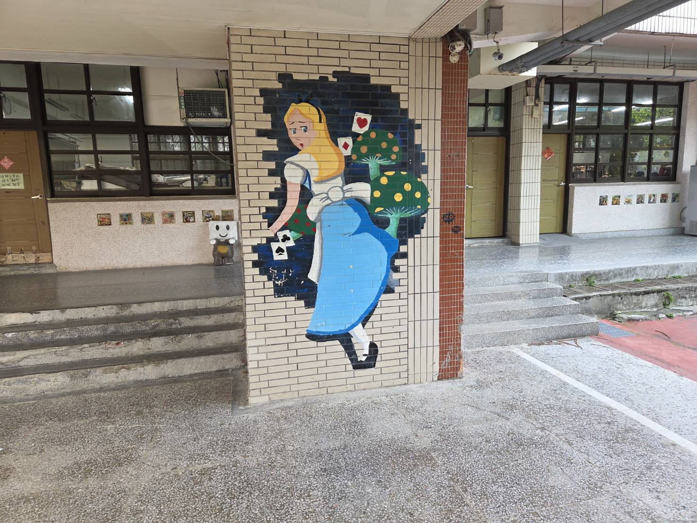
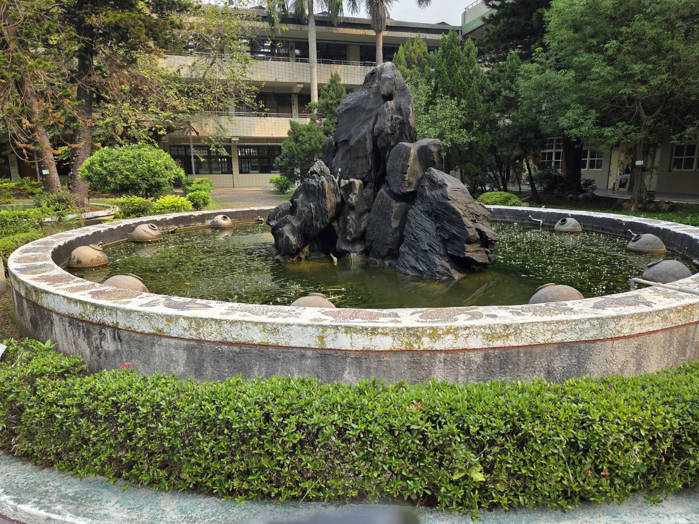

```html
<!DOCTYPE html>
<html lang="zh-TW">
<head>
    <meta charset="UTF-8">
    <meta name="viewport" content="width=device-width, initial-scale=1.0">
    <title>泰山國中校園意象拼貼</title>
    <style>
        body {
            font-family: 'Microsoft JhengHei', sans-serif;
            background-color: #f4f9f4;
            display: flex;
            justify-content: center;
            align-items: center;
            min-height: 100vh;
            margin: 0;
            padding: 20px;
        }
        .collage-container {
            background: white;
            padding: 20px;
            border-radius: 15px;
            box-shadow: 0 10px 30px rgba(0,0,0,0.15);
            max-width: 1200px;
            width: 100%;
        }
        .collage-header {
            text-align: center;
            margin-bottom: 20px;
            color: #2e8b57;
        }
        .collage-header h2 {
            margin: 0;
            font-size: 2.2em;
        }
        .collage-header p {
            margin: 5px 0 0 0;
            color: #666;
            font-size: 1.1em;
        }
        /* 拼貼網格佈局設定 */
        .grid-gallery {
            display: grid;
            grid-template-columns: repeat(4, 1fr);
            grid-template-rows: repeat(2, 250px);
            gap: 15px;
        }
        .grid-item {
            border-radius: 10px;
            overflow: hidden;
            position: relative;
            box-shadow: 0 4px 8px rgba(0,0,0,0.1);
        }
        .grid-item img {
            width: 100%;
            height: 100%;
            object-fit: cover;
            transition: transform 0.4s ease;
        }
        .grid-item:hover img {
            transform: scale(1.08);
        }
        
        /* 定義每張照片的位置與大小 */
        /* 主視覺：操場遠景 (佔據左側 2x2 大區塊) */
        .item-main {
            grid-column: 1 / 3;
            grid-row: 1 / 3;
        }
        /* 愛麗絲彩繪 */
        .item-art1 {
            grid-column: 3 / 4;
            grid-row: 1 / 2;
        }
        /* 榕樹操場 */
        .item-nature1 {
            grid-column: 4 / 5;
            grid-row: 1 / 2;
        }
        /* 生態水池 */
        .item-nature2 {
            grid-column: 3 / 4;
            grid-row: 2 / 3;
        }
        /* 中庭花園或撐傘紳士 */
        .item-mixed {
            grid-column: 4 / 5;
            grid-row: 2 / 3;
        }

        /* 響應式設計：在較小螢幕上調整排列 */
        @media (max-width: 768px) {
            .grid-gallery {
                grid-template-columns: repeat(2, 1fr);
                grid-template-rows: auto;
            }
            .item-main {
                grid-column: 1 / 3;
                grid-row: auto;
                height: 300px;
            }
            .grid-item { height: 200px; }
        }
    </style>
</head>
<body>

    <div class="collage-container">
        <div class="collage-header">
            <h2>泰山國中校園意象</h2>
            <p>平頂山腳書香盛 ‧ 大窼溪畔樂輕揚</p>
        </div>
        
        <div class="grid-gallery">
            <!-- 1. 主視覺：活力操場與平頂山 -->
            <div class="grid-item item-main">
                
            </div>
            
            <!-- 2. 藝術校園：愛麗絲彩繪 -->
            <div class="grid-item item-art1">
                
            </div>
            
            <!-- 3. 綠意生態：老樹參天 -->
            <div class="grid-item item-nature1">
                
            </div>
            
            <!-- 4. 綠意生態：生態水池 -->
            <div class="grid-item item-nature2">
                
            </div>
            
            <!-- 5. 藝術與綠意：中庭花園景觀 -->
            <div class="grid-item item-mixed">
                
            </div>
        </div>
    </div>

</body>
</html>
```

開啟這個檔案後，您如果覺得排版滿意，可以直接**使用電腦的螢幕截圖功能**，將這個區塊截取下來，就能得到一張高質感、包含學校所有重要元素（操場、山林、生態池、彩繪、老樹）的單一合成圖片檔了！

您需要我將這個「校園意象拼貼牆」的設計，直接整合放進我們之前做好的 `index.html` 首頁中嗎？